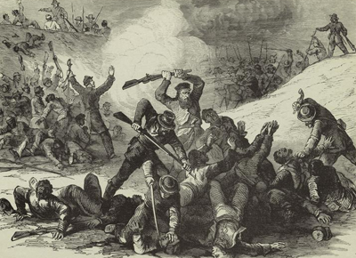

|
Formed in December 1861, the Congressional Joint Committee
on the Conduct of the War (CCW) held the broadly interpreted
power to inquire into the conduct of the Northern war effort
through the investigation and examination of military
persons and maneuvers. The CCW began in relative anonymity
in the months following the First Battle of Bull Run, but
remained in existence for the length of the Civil War and
made a name for itself through its harassment of General
George B. McClellan and its efforts to influence the
military policies and appointments of President Lincoln.
Following the disastrous Union defeat at the first Battle
of Bull Run and the subsequent loss at Ball's Bluff, Senator
Zachariah Chandler of Michigan introduced a resolution in
the Senate to create a joint committee with the House of
Representatives to probe the causes for these military

Andrew Johnson
|
catastrophes. The resolution passed in both chambers
without significant debate, and the respective leaders of
Congress appointed the following members to the committee:
Senator Chandler (R-MI), Senator Benjamin Wade (R-OH),
Senator Andrew Johnson (D-TN), Representative George W.
Julian (R-IL), Representative Moses Odell (D-NY).
Representative John Covode (R-PA), and Representative Daniel
Gooch (R-MA). The president of the Senate selected Wade as
chairman, and the CCW initiated its first investigation in
January of 1862.
Over the course of the Civil War, the Committee's scope
included not only the battles of Bull Run and Ball's Bluff,
but also the battles of Fredericksburg, Fort Fisher, and the
Crater, as well as the atrocities committed by Confederate
soldiers at Fort Pillow. While the CCW and its supporters
in Congress made sure that the scope of its mission
statement remained broad, the overall agenda of the
Committee's members remained narrow throughout its tenure.
Led in name and spirit by the Radical Republicans Wade,
Chandler, and Julian, the Committee sought to place a
definitive spin on their investigations, and by war's end
the CCW had earned a deserved reputation for doggedly
pursuing their partisan goals. These men held very strong
abolitionist beliefs and felt that the war effort required
an aggressive approach regarding slavery and the
Confederacy. As a result, they used the Committee's powers
in numerous attempts to influence both the use of, and the
leadership of the Union Army.
Beginning with the investigation of Bull Runs and Ball's
Bluff in January 1862, the CCW established a pattern that
defined its procedures until its disbandment in June 1865.
First, in their attacks on Brigadier General Charles P.
Stone and General McClellan, the Radical Republicans
expressed their dissatisfaction with West Point military men
and, more importantly, with Democratic officers. By
|

The Fort Pillow massacre outraged
many Northerners, even those who were lukewarm on
emancipation.
|
examining Stone in secret without allowing him
representation and subsequently influencing his military
arrest and solitary confinement, the members of the CCW also
displayed a willingness to use extralegal means to
accomplish their goals. Finally, as evidenced by their
meetings with the Lincoln and their calls for military
activity against the Confederacy in the early months of
1862, Wade and his cohorts revealed their desire to
influence the way in which Lincoln and his generals chose to
direct the Union war effort.
From 1862 to 1865, the machinations of the CCW remained
barely hidden beneath their investigative actions. While
the initial inquiries into Ball's Bluff and Bull Run
targeted particular officers negatively, the Committee's
report on Frederiscksburg sought to bolster the reputation
of General Ambrose Burnside in an effort to indirectly end
McClellan's military career. Similarly, the conclusions
reached by Wade and his colleagues on Fort Fisher supported
the actions of one of their favorites, General Benjamin
Butler, a man who had not found similar support in the White
House. The Committee at times even went beyond the scope of
their mission statement, and Wade and Chandler in particular
often-besieged Lincoln in their efforts to push for a more
aggressive military strategy.
Yet not all of the CCW's investigations focused on the
failures of various Union military endeavors. It also
exposed corruption in military contracts and facilitated
reform. Further, the CCW's reports on Fort Pillow and on
Union prisoners of war highlighted some of the atrocities of
the war of which the Northern public may not have been
completely aware. Their investigation of the inhumane
treatment of black soldiers and military prisoners brought
the CCW's focus squarely on the Confederacy's conduct of the
war and provided the evidence the Radical Republicans needed
for pursuing a strict reconstruction of the South. By
demonstrating the cruelty of the rebels in warfare, the CCW
hoped to destroy the hopes of those individuals, including
Lincoln, who sought to create a harmonious plan for the
reunion of the two warring sides.
Over a period of approximately three and a half years,
the CCW compiled an impressive record of investigations and
reports. Its members vociferously presented their opinions
and conclusions on military strategy, military appointments,
and the plans for the reconstruction that would follow the
War. Their impact on the Northern war effort and on
Lincoln's policies cannot be neatly summarized. While their
attacks eventually influenced the President's dismissal of
McClellan, the general's record in the field also played a
significant role. In their fervent support of abolition,
the CCW prodded the administration toward declaring
emancipation. However, their contempt for West Point and
Democratic officers also led the Committee to promote
several officers, such as Benjamin Butler and Joseph Hooker,
long after they had proven themselves liabilities in battle.
And in the last year of the War, the CCW also found itself
unable to force Lincoln to dismiss Ulysses S. Grant or
George Meade. In the end, the Joint Committee on the
Conduct of the War served as a strong voice of the Radical
Republicans and their agenda throughout the Civil War, and
Lincoln could never completely ignore its influence.
Source: Joan Waugh, ed., Facts on File Encyclopedia of American
History: Civil War and Reconstruction, 1856 to 1869 (New York: Facts on
File, 2003), 190-192.
|